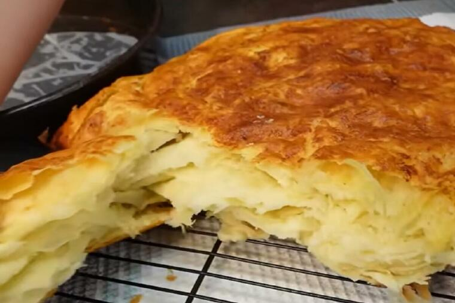

Bosnian masna pogaca

Preparation instructions
Hi all! This is our third recipe for single guys cooking on their own.
This one is even a bit more demanding, but it is well worth it!
List of ingredients
- 1 di-go yeast package
- 1000 gr flour
- 1 glass of warm milk
- spoon sugar
- 1 egg
- 250 gr butter
- Seasonings: just some salt
Steps
- Take the yeast and mix it in a glass of warm milk and a spoon of flour.
- Mix it all together and wait for it to "rise up"
- Put 1000 gr of flour on the work table, put some salt in it
- Make a hole in the middle, put a fresh whole egg inside
- Also add 2-3 big spoons oil
- Finally, add the yeast mixture by slowly stirring with a spoon
- When mixed together, put it all in a bowl, cover with a kitchen cloth and wait to "rise up"
- When doubled in size, take it out on the working table and stretch it out
- Take a third of the butter and spread it over the dough, fold it over
- Repeat the last step three times
- Meanwhile, preheat the oven to 250 Celsius
- Put the dough in, and lower the temperature to 220 Celsius and keep it so for 10-15 minutes
- Lower the temperature to 200 Celsius and keep it so for 10/15 minutes
- Lower the temperature to 180 Celsius and keep it so for 10/15 minutes
- Cover the dough with alu foil
- It is done when you knock on it and it has a pounding sound
- Another criteria for "DONE" is when you stick a knife inside, pull it out and nothing sticks to it!
- Serve :)